Classes🔗
See Attributes for selective attribute deprecation and multi-version attribute migrations.
This page covers classes, Enums, dataclasses, and module-level constants. Patterns include forwarding old class names, transparent proxy wrappers, and stacked deprecation layers. For function deprecation, see Functions.
With deprecated_class(update_docstring=True), existing class documentation receives the deprecation notice. A class with __doc__ = None keeps None, without inheriting internal proxy documentation. The original class docstring is unchanged.
@deprecated on a class🔗
@deprecated accepts classes directly and dispatches to deprecated_class(), producing an identical _DeprecatedProxy. Everything documented on this page applies to either form, with one exception: the front door forwards only a class target, so a function, functools.partial or callable-instance target on a class source is ignored. Use deprecated_class(target=...) for those.
Class dispatch notice
Dispatch is permanent and is not deprecated. It adds a one-time informational UserWarning, suppressed by stream=None. Only the notice is removed in v1.0.
See Troubleshooting for per-class keying and suppression options. The thread-safe notice cache retains at most 4096 class keys in insertion order. An evicted class may receive the notice again.
from deprecate import deprecated
# NEW/FUTURE API — the replacement class callers should migrate to
class HttpService:
def call(self) -> str:
return "ok"
# DEPRECATED API — @deprecated on a class source dispatches to @deprecated_class
@deprecated(target=HttpService, deprecated_in="1.0", remove_in="2.0") # warns: UserWarning (one-time dispatch notice)
class LegacyService:
pass
svc = LegacyService() # warns: FutureWarning
print(svc.call())
Prefer @deprecated_class() directly for classes, Enums, and dataclasses. It produces the same result without a dispatch notice and exposes proxy-only options such as attrs_mapping. The rest of this page uses that explicit form.
Class deprecation🔗

Choose one of three common patterns:
- Rename a method with
@deprecated(target=execute)on the old name; calls forward to the replacement. - Decorate
__init__to warn at instantiation, optionally forwarding construction to a successor class. - Rename or retire only some attributes of a class that stays:
@deprecated_class(attrs_mapping={"old": "new"}, ...)warns on the listed names and redirects them; see Attributes.
Rename a method within a class:
from deprecate import deprecated, void
class MyService:
# NEW/FUTURE API — renamed from run() for clarity
def execute(self, x: int) -> int:
"""Current method."""
return x * 2
# DEPRECATED API — `run` was the original name before the rename
@deprecated(target=execute, deprecated_in="1.0", remove_in="2.0")
def run(self, x: int) -> int:
"""Deprecated — renamed to execute()."""
return void(x)
svc = MyService()
# calling this method will raise a deprecation warning:
# The `run` was deprecated since v1.0 in favor of `your_module.execute`.
# It will be removed in v2.0.
print(svc.run(5))
Forward __init__ to a successor class. The deprecated class inherits from its successor, preserving all methods and properties on instances:
# NEW/FUTURE API — renamed to be more descriptive
class HttpClient:
"""My new class anywhere in the codebase or other package."""
def __init__(self, c: float, d: str = "abc"):
self.my_c = c
self.my_d = d
# ---------------------------
from deprecate import deprecated, void
# DEPRECATED API — `Client` was the original name before it was renamed to HttpClient
class Client(HttpClient):
"""
The deprecated class should be inherited from the successor class
to hold all methods and properties.
"""
@deprecated(target=HttpClient, deprecated_in="0.2", remove_in="0.4")
def __init__(self, c: int, d: str = "efg"):
"""
You place the decorator around __init__ as you want
to warn user just at the time of creating object.
Decorating __init__ warns at instantiation time and optionally
forwards to another class. For deprecating the class itself
(name change, Enum, dataclass), use @deprecated_class() instead.
"""
void(c, d)
# calling this function will raise a deprecation warning:
# The `Client` was deprecated since v0.2 in favor of `your_module.HttpClient`.
# It will be removed in v0.4.
inst = Client(7)
print(inst.my_c) # returns: 7
print(inst.my_d) # returns: "efg"
Constants and instances🔗
deprecated_instance wraps module-level dicts, lists, and custom objects in a transparent proxy. Attribute, item, and call access emit a deprecation notice. Use read_only=True to block attribute and item writes, in-place operators and sixteen standard collection mutators (append, extend, insert, pop, remove, clear, update, setdefault, add, discard, sort, reverse, popitem and the set difference_update, intersection_update, symmetric_difference_update) through the deprecated alias. The guard matches method names on custom objects too. Other methods and nested writes can still mutate the object. See Limitations for the detail.
The proxy carries only protocols supported by the wrapped object:
- A deprecated settings
dictis neithercallable(), anIterator, noros.PathLike. - A deprecated file handle retains context-manager support and iteration.
- A deprecated Enum class retains
len()and iteration.
Arithmetic, unary, and conversion operators forward to the wrapped object. Data-use operations emit deprecation warnings; ordering comparisons, format(), and context exit remain silent structural probes.
When operations consume warnings
Synchronous operations warn only after success. A subscript miss (KeyError) or another failed operation emits nothing and preserves the num_warns budget.
next() warns before advancing the wrapped iterator. An exhausted next() (StopIteration) still warns and spends the budget. A warning raised as an error consumes no item.
__await__ and __anext__ warn when obtaining the underlying awaitable, before it runs. Later rejection or async exhaustion still consumes the warning budget. Calls also warn before execution, like @deprecated.
Fatal operations. With as_exception=True, these operations raise DeprecatedError before touching the wrapped object:
- Subscripts, iteration,
next(), context entry, async iteration, andawaitraise first. - Unary and conversion operators,
round(), and in-place operators raise first.
A missing key therefore raises DeprecatedError rather than KeyError, and a defaultdict gains no entry. Binary operators compute first and raise after a successful result.
In-place operators (+=, -=, etc.) return the active object's result rather than a re-wrapped proxy.
Right-hand operands. Python cannot fall back to the proxy when the left-operand type raises TypeError directly, as with "prefix" + proxy_str for str. Put the proxy on the left or wrap the value in a container. See Troubleshooting for details.
A warning filter or custom stream can raise after synchronous or asynchronous context entry acquires a resource. The proxy invokes that context's exit method before propagating the error. Failed underlying entry does not invoke exit.
isinstance(DEFAULTS, dict) returns True: the proxy reports the wrapped object's type through __class__.
Introspection limits
type(DEFAULTS) still returns the wrapper class. Only isinstance, which honours __class__, is transparent; strict type() equality still sees the wrapper.
Detect proxies with isinstance(DEFAULTS, DeprecationProxy) after from deprecate import DeprecationProxy. Never use type(DEFAULTS) is _DeprecatedProxy, which names a private class.
isinstance checks, dunder reads, and failed hasattr probes stay silent. They do not consume the num_warns budget.
Writes never warn. Item writes and deletes (DEFAULTS["lr"] = 0.01, del DEFAULTS["lr"]) follow the attribute-write rule. With read_only=True, writes raise AttributeError unless skip_if evaluates True. During a skip, every write goes directly to the wrapped object.
A deprecated_instance over a plain function can act as a method in a class body: class Model: scale = deprecated_instance(legacy_scale, ...).
- Through an instance, the proxy binds like the wrapped function.
Model().scale(2)callslegacy_scale(model, 2)and warns against onenum_warnsbudget shared across instances. Model().scaleis a bound method whose__func__is the proxy. Consequently,inspect.signaturedropsself.- Through the class,
Model.scaleis the proxy itself, soModel.scale(model, 2)also works. Usestaticmethod(...)around the proxy to keep the function unbound. - Proxies over data, classes, and non-function descriptors (
property,classmethod, andstaticmethodobjects) remain as stored and never bind. - Only proxies over functions or
@deprecatedwrappers are descriptors.inspect.isroutine(proxy)isTruefor these andFalsefor data and class proxies.
Deprecated proxies survive copy.copy() and copy.deepcopy() round-trips. Copies retain the warning behavior and receive independent counters snapshotted from the original.
A shallow proxy copy also tries to copy its replacement data object. After success, top-level writes such as copy["key"] = value do not affect the original replacement. If copying raises, the copy retains the shared replacement, so writes can reach it. Nested mutable values remain shared after a shallow copy. copy.deepcopy can provide independence when the objects support it.
Plain-object deprecated_instance proxies, including dicts, lists, and custom objects, are fully picklable.
Pickling class aliases
A deprecated_class alias raises PicklingError in the common pattern where the proxy replaces the decorated class name. Pickle cannot find the original class by reference. Use copy.deepcopy for class alias proxies instead.
Instances of classes deprecated in place pickle and load as original-class instances without warnings, including exception and OrderedDict subclasses. Classes defining their own __reduce_ex__, such as Enums, are exceptions.
from deprecate import deprecated_instance
# NEW/FUTURE API — renamed to be more explicit about its scope
TRAINING_CONFIG = {"lr": 0.001, "batch_size": 32, "epochs": 10}
# What it looked like before the rename:
# DEFAULTS = {"lr": 0.001, "batch_size": 32, "epochs": 10}
# DEPRECATED API — `DEFAULTS` was the original name; read-only so
# callers cannot mutate shared state through the deprecated alias
DEFAULTS = deprecated_instance(
TRAINING_CONFIG,
deprecated_in="1.2",
remove_in="2.0",
read_only=True,
)
# Reading still works but emits a FutureWarning once:
# The `dict` was deprecated since v1.2. It will be removed in v2.0.
print(DEFAULTS["lr"]) # 0.001
Serving a replacement object🔗
Pass the replacement as target= (since v0.16) when the old name should already return new values. Attribute, item, operator, and call access use the replacement. The old name keeps warning until removal.
When skip_if evaluates true, operations use the wrapped source without warning or forwarding. Use name= so warnings name the alias callers use.
Built-in warnings name callable replacements only. For a dict or settings object, provide a message_template naming the replacement. See Customization. In generic warnings, %(target_name)s and %(target_path)s render empty for data replacements. Mapped-attribute warnings do fill them.
from deprecate import deprecated_instance
# NEW/FUTURE API — the retry settings that replaced `RETRY_DEFAULTS`
RETRY_POLICY = {"timeout": 30, "retries": 5}
# DEPRECATED API — the old name now serves the new settings and still warns
RETRY_DEFAULTS = deprecated_instance(
{"timeout": 10, "retries": 3},
name="RETRY_DEFAULTS",
target=RETRY_POLICY,
deprecated_in="1.3",
remove_in="2.0",
message_template="`%(source_name)s` is deprecated since v%(deprecated_in)s; use `RETRY_POLICY` instead.",
)
print(RETRY_DEFAULTS["timeout"]) # warns: FutureWarning
Operations through the old name follow the replacement. isinstance and hashing use it, and writes land on it.
Replacement type compatibility
Proxy protocols combine those of the source and replacement, because skip_if can serve the source. A function replaced by a dict still reports callable(proxy) as True, although calling it raises TypeError.
Keep the replacement's type unchanged or use a subclass unless the type change is intended. A tuple constant replaced by a list becomes unhashable immediately when the deprecation ships.
target=True, target=False, TargetMode.AUTO, and modules raise TypeError. Redirect modules with deprecated_module.
attrs_mapping (since v0.16 on deprecated_instance) deprecates only the listed attribute spellings of an object, the same way it does on a class proxy. Every other attribute stays silent. The mapping covers attributes, not the keys of a mapping object:
from deprecate import deprecated_instance
# NEW/FUTURE API — the display settings spell the attribute `colour`
class DisplaySettings:
colour = "teal"
# DEPRECATED API — the `color` spelling still works but warns
THEME = deprecated_instance(
DisplaySettings(), name="THEME", attrs_mapping={"color": "colour"}, deprecated_in="1.3", remove_in="2.0"
)
print(THEME.color) # warns: FutureWarning
print(THEME.colour)
On callable objects, args_mapping (since v0.16 on deprecated_instance) renames keyword arguments. Values renamed onto positional-only parameters are passed positionally.
- Without
target, calls warn only when an old name is used. - With a callable
target, every call warns because calling the old name is itself deprecated.
Unused call options. On objects that are never called, args_mapping and args_extra cannot apply. They emit UserWarning, becoming TypeError in v1.0.
Enums and dataclasses🔗
deprecated_class() wraps an Enum or dataclass in a transparent proxy. It emits deprecation notices and forwards attribute, item, and call operations to the replacement.
- Use
args_mappingto rename or drop kwargs when calling the deprecated class. - Without an explicit
target, supplyingargs_mappingauto-resolves toTargetMode.ARGS_REMAP. Warnings occur only when an old argument name is used, matching@deprecated(target=TargetMode.ARGS_REMAP, args_mapping=...). - For a no-target
ARGS_REMAPproxy, calls using new argument names are silent. A callable replacement target still emits the class-level warning. Structural checks withisinstanceandissubclassremain silent. - Use
args_extrato inject fixed kwargs into every forwarded call. Usemessage_templateto override the warning; both options behave as their@deprecatedcounterparts do. - An Enum rename alias that passes the replacement as its own
target(Color = deprecated_class(target=ThemeColor, ...)(ThemeColor)) warns at runtime, andpydeprecate checkaccepts it. Only a proxy bound back to the class's own name (ThemeColor = deprecated_class(target=ThemeColor, ...)(ThemeColor)) is reported as a no-effect self-reference.
from enum import Enum
from dataclasses import dataclass
from deprecate import deprecated_class
# mypackage/theme.py — what it looked like before the rename:
#
# class Color(Enum):
# RED = 1
# BLUE = 2
# NEW/FUTURE API — renamed to be more descriptive
class ThemeColor(Enum):
RED = 1
BLUE = 2
# DEPRECATED API — `Color` was the original name; no class body needed,
# the proxy forwards all access to ThemeColor
Color = deprecated_class(target=ThemeColor, deprecated_in="1.0", remove_in="2.0")(ThemeColor)
# All access is forwarded to ThemeColor — a FutureWarning is emitted once:
# The `ThemeColor` was deprecated since v1.0 in favor of `<module>.ThemeColor`. It will be removed in v2.0.
print(Color.RED is ThemeColor.RED) # True
print(Color(1) is ThemeColor.RED) # True
print(Color["RED"] is ThemeColor.RED) # True
# Precision migration story:
# - PointV1 used integer pixel coordinates.
# - PointV2 supports float coordinates for sub-pixel precision and smoother transforms.
# NEW/FUTURE API — extended to float precision
@dataclass
class PointV2:
x: float
y: float
# DEPRECATED API — PointV1 was the original integer-coordinate implementation
@deprecated_class(target=PointV2, deprecated_in="1.8", remove_in="2.0")
@dataclass
class PointV1:
x: int
y: int
# Existing callers using integer coordinates still work and are forwarded to PointV2:
p_old = PointV1(3, 4)
print(isinstance(p_old, PointV2))
print((p_old.x, p_old.y))
# New callers can use higher precision directly:
p_new = PointV2(3.25, 4.75)
print((p_new.x, p_new.y))
Conditional skip🔗
deprecated_class() and deprecated_instance() accept skip_if: a bool or zero-argument callable returning bool, evaluated at access time.
While the condition evaluates True, the proxy serves the wrapped source unchanged:
- Warnings and
attrs_mappingredirects are disabled. args_mapping,args_extra,targetforwarding, andread_onlyenforcement are disabled.isinstance(proxy, ...), class statements subclassing the alias, and arithmetic operands follow the wrapped source.
Audits never evaluate the condition. Conditions needing a running application therefore do not break find_deprecation_wrappers or the CLI. Callable decorators behave similarly: skipped calls execute the source body unchanged.
Safe skip conditions
A proxy operation may consult the condition more than once. Keep the callable cheap and stable; non-bool results raise TypeError at access time.
Return rather than raise when context is missing. Tools such as help() and pytest --doctest-modules run isinstance on module members, evaluating every proxy's condition.
from deprecate import deprecated_class
MIGRATION_ROLLOUT_DONE = False
def rollout_pending() -> bool:
return not MIGRATION_ROLLOUT_DONE
# NEW/FUTURE API — the replacement backend callers should migrate to
class StorageBackend:
def save(self) -> str:
return "stored"
# DEPRECATED API — deprecation stays dormant until the rollout flag flips
@deprecated_class(target=StorageBackend, deprecated_in="1.0", remove_in="2.0", skip_if=rollout_pending)
class LegacyStorage:
def save(self) -> str:
return "legacy-stored"
store = LegacyStorage() # silent — skip active, source class served, no target forwarding
print(store.save())
Once the condition flips to False, the very next access warns and forwards to the target as usual — no re-decoration required.
Type annotations and static analysis🔗
At runtime, deprecated_class() returns a proxy. Type checkers model the class it forwards to.
The call form deprecated_class(target=BrandColor, ...)(WidgetColor) has type type[BrandColor] regardless of the wrapped class. The alias therefore checks against the replacement.
With the decorator form, mypy ignores a class decorator's return type, leaving the name typed as the decorated class. Pyright applies it, so @deprecated_class(target=BrandColor, ...) produces type[BrandColor]:
from enum import Enum
from deprecate import DeprecationProxy, deprecated_class
# NEW/FUTURE API — renamed to describe the palette rather than the widget
class BrandColor(Enum):
RED = 1
BLUE = 2
# DEPRECATED API — `WidgetColor` was the original name; `target=BrandColor` types the alias as `type[BrandColor]`
WidgetColor = deprecated_class(target=BrandColor, deprecated_in="1.0", remove_in="2.0")(BrandColor)
print(WidgetColor(1) is BrandColor.RED) # warns: FutureWarning
print(isinstance(BrandColor.BLUE, WidgetColor))
print(isinstance(WidgetColor, DeprecationProxy))
Output: WidgetColor(1) is BrandColor.RED; isinstance(BrandColor.BLUE, WidgetColor); isinstance(WidgetColor, DeprecationProxy)
Type-checking behavior depends on how the alias is used:
- Class checks succeed.
isinstance(x, WidgetColor)andissubclass(...)narrow toBrandColor.WidgetColor(1), member and attribute access, and passing the alias astype[BrandColor]also type-check. Each forwards to the class at runtime. - The alias is a variable, not a type. Every checker rejects
def paint(color: WidgetColor), and mypy also rejectsclass Child(WidgetColor). Annotate with the replacement class, or use the decorator form in mypy to retain a class statement. - Missing old names are flagged. Renamed kwargs and attributes absent from the wrapped class trigger
call-argandattr-definederrors, as in the decorator form. Retain old names in a legacy class body to keep calls type-checking during migration. - An explicit proxy cast permits old names. Use
cast(DeprecationProxy[Config], deprecated_class(...)(Config))for permissive calls and attributes. The trade-off is thatisinstanceagainst this alias no longer type-checks. - A class target determines the type. With
target=BrandColor, the alias istype[BrandColor]even when wrapping a separate legacy class.WidgetColor(...)has theBrandColorinstance type returned at runtime. - Without a class target, the wrapped type remains. This includes
args_mapping-only andattrs_mapping-only wrappers. Withskip_if, the type models the steady state; keep the wrapped class compatible withtargetwhile serving it during skips. - The
@deprecatedfront door cannot seetargetstatically. A class decorated with@deprecated(target=BrandColor, ...)keeps its wrapped-class type despite runtime forwarding. Usedeprecated_class(target=BrandColor, ...)fortype[BrandColor]. - Proxy-only attributes are invisible on
type[BrandColor]. Read__deprecation_config__withget_deprecation_config(WidgetColor)and unwrap withinspect.unwrap(WidgetColor). Alternatively, usecast(DeprecationProxy[Any], WidgetColor)at the site needing these attributes.
DeprecationProxy[T] remains the annotation for deprecated_instance() proxies, where T is the type calling the proxy produces.
Functional aliases keep the source name. Warnings name the wrapped class, not the assigned variable. The example reports `BrandColor`. Wrap a source class with the name callers know, or provide message_template.
isinstance only. DeprecationProxy declares attributes as well as methods, making it a data protocol. isinstance(obj, DeprecationProxy) works. issubclass(SomeType, DeprecationProxy) raises TypeError, like every runtime-checkable protocol with non-method members.
Breadcrumbs for documentation and IDE tools🔗
Every proxy carries two attributes that let static tooling see through it to the original object:
| Attribute | Points to | Used by |
|---|---|---|
__wrapped__ |
the source class or object | inspect.unwrap, Sphinx autodoc, griffe/mkdocstrings, IDEs |
__signature__ |
the source's signature | inspect.signature and anything that does not walk __wrapped__ |
Reading either attribute has no side effects or deprecation notices. Documentation builds and IDE hovers stay quiet:
import inspect
from dataclasses import dataclass
from deprecate import deprecated_class
# NEW/FUTURE API — renamed for clarity
@dataclass
class RetryPolicy:
attempts: int
backoff: float = 1.0
# DEPRECATED API — `RetryConfig` was the original name
@deprecated_class(target=RetryPolicy, deprecated_in="1.4", remove_in="2.0")
@dataclass
class RetryConfig:
attempts: int
backoff: float = 1.0
# No warning — the breadcrumbs are read straight off the proxy
print(inspect.unwrap(RetryConfig).__name__)
print(str(inspect.signature(RetryConfig)))
Output: inspect.unwrap(RetryConfig).__name__; str(inspect.signature(RetryConfig))
Objects without introspectable signatures receive __signature__ = None, rather than raising. A plain dict wrapped by deprecated_instance() is one example. Failed source introspection never prevents wrapping.
PEP 702 static checkers🔗
Stack typing_extensions.deprecated or warnings.deprecated directly above @deprecated_class(...) to flag every old-class use in mypy and pyright. Supply category=None and a string-literal message. See Functions → Static type checkers.
With a class target, the checkers infer different types:
- Mypy ignores the class decorator's return type, retaining the old class statement. Mirror the replacement's constructor and methods in the old class body for accurate checking.
- Pyright applies the return type, producing
type[ReportWriter]in the example below. It already checks calls against the replacement.
The PEP 702 message lives on the proxy, leaving the replacement class unmarked. It survives copy.copy, copy.deepcopy, and pickle round-trips of the alias.
After del alias.__deprecated__, the attribute reads as missing. It does not fall through to the wrapped class.
import typing_extensions
from deprecate import deprecated_class
# NEW API — the renamed writer
class ReportWriter:
def __init__(self, path: str = "") -> None:
self.path = path
# DEPRECATED API — flagged by mypy, forwarded with a warning at runtime
@typing_extensions.deprecated("Use `ReportWriter` instead.", category=None)
@deprecated_class(target=ReportWriter, deprecated_in="1.2", remove_in="2.0")
class CsvReportWriter:
def __init__(self, path: str = "") -> None:
self.path = path
print(CsvReportWriter("out.csv").path) # warns: FutureWarning
print("__deprecated__" in vars(ReportWriter))
Fatal deprecations🔗
as_exception=True works on deprecated_class() and deprecated_instance() as on callable forms. See Fatal deprecations for the full contract.
Operations that would warn raise DeprecatedError instead:
- Instantiation, warning-producing attribute reads, item access, and calls become fatal.
- Data-use arithmetic and conversion dunders become fatal.
- Writes to names listed in
attrs_mappingraise before the mapped write.
Ordinary attribute writes and access outside an active attrs_mapping stay silent. Constructor-only TargetMode.ARGS_REMAP does not make attribute access fatal.
Structural probes remain silent: isinstance, issubclass, repr, str, equality, ordering, and len never warned.
Fatal attribute probes. Without attrs_mapping, a missing attribute makes hasattr return False silently. Successful non-dunder lookups on warning-producing paths raise DeprecatedError, which hasattr does not swallow. With attrs_mapping, listed names raise before lookup even when missing. Unlisted names stay silent whether present or missing.
Fatal deprecation is not an authorization boundary
Without attrs_mapping, attribute lookup resolves the value before reaching the fatal warning path. A property getter or descriptor can therefore produce side effects before DeprecatedError.
If the getter raises its own exception, that exception propagates first. Mapped attribute reads reach the fatal path before resolving the mapped descriptor.
Next: Properties — learn how to deprecate @property and @cached_property accessors.
See also🔗
- Attributes covers selective attribute deprecation and multi-version stacking.
- Use Cases overview provides a guided tour of deprecation patterns.
- Functions covers function and method deprecation.
- Properties covers
@propertyand@cached_propertydeprecation. - Async covers async functions and generators.
- Advanced covers docstring updates,
args_extra, testing helpers, and class/static methods. - Audit Tools covers Python scanning, validation, and chain detection.
- Audit Policy covers removal deadlines and policy enforcement.
- CI Integration covers CI gates, pre-commit, and GitHub Actions.
- Testing covers testing deprecated code and warning behavior.
- Troubleshooting explains common
deprecated_classconfiguration errors and fixes.